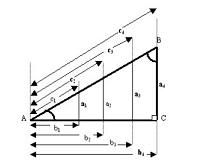

INICIO
TRIGONOMETRIA
¿QUE ES LA TRIGONOMETRIA?
El primer paso antes de entrar de lleno en el análisis del significado de la palabra trigonometría es proceder al establecimiento de su origen etimológico. En este sentido tenemos que exponer que el citado se encuentra en el griego donde podemos observar cómo está formada aquella por la unión de trigonon que equivale a “triángulo”, metron que puede definirse como “medida” y tria que es sinónimo de “tres”
La trigonometría es la subdivisión de las matemáticas que se encarga de calcular los elementos de los triángulos. Para esto se dedica a estudiar las relaciones entre los ángulos y los lados de los triángulos.
Esta especialidad interviene en diversas áreas de las matemáticas en las que se necesita trabajar con precisión. La trigonometría, de todas formas, cuenta con una amplia variedad de aplicaciones. Permite, por ejemplo, medir las distancias entre dos ubicaciones o cuerpos celestes a partir de técnicas de triangulación. La trigonometría también se aplica en los sistemas de navegación satelital.
Existen tres unidades que emplea la trigonometría para la medición de ángulos: el radián (considerada como la unidad natural de los ángulos, establece que una circunferencia completa puede dividirse en 2 pi radianes), el gradián o grado centesimal (que permite dividir la circunferencia en cuatrocientos grados centesimales) y el grado sexagesimal (se usa para dividir la circunferencia en trescientos sesenta grados sexagesimales).
Las principales razones trigonométricas son tres: el seno (que consiste en calcular la razón existente entre el cateto opuesto y la hipotenusa), el coseno (otra razón pero, en este caso, entre el cateto adyacente y la hipotenusa) y la tangente (la razón entre ambos catetos: el opuesto sobre el adyacente).
Las razones trigonométricas recíprocas, por otra parte, son la cosecante (la razón recíproca del seno), la secante (la razón recíproca del coseno) y la cotangente (la razón recíproca de la tangente).

Estas son las distintas clases de razones trigonométricas principales, pero tampoco podemos obviar que también hay otros elementos fundamentales dentro de esta rama de las Matemáticas que ahora nos ocupa. En concreto, nos estamos refiriendo a las razones trigonométricas de cualquier ángulo.
Estas últimas nos llevarían a hablar de lo que se conoce como circunferencia goniométrica que se caracteriza por el hecho de que su radio es la unidad en sí y su centro no es otro que el origen de las coordenadas pertinentes. Todo ello sin olvidar tampoco que en la misma los ejes de las coordenadas lo que hacen es delimitar cuatro cuadrantes que están enumerados en lo que es el sentido contrario al que marcan las agujas de un reloj.
Se conoce como identidad trigonométrica a la igualdad que involucra a funciones trigonométricas y que resultan verificables para cualquier valor de las variables (los ángulos sobre los que se aplican las funciones).

MIGUEL ANGEL GOMEZ DIAZ
JAVIER RONAY VALASQUEZ AGUILAR
CUARTO SEMESTRE GRUPO H
CAPACITACION PARA EL TRABAJO
PAGINA PRINCIPAL